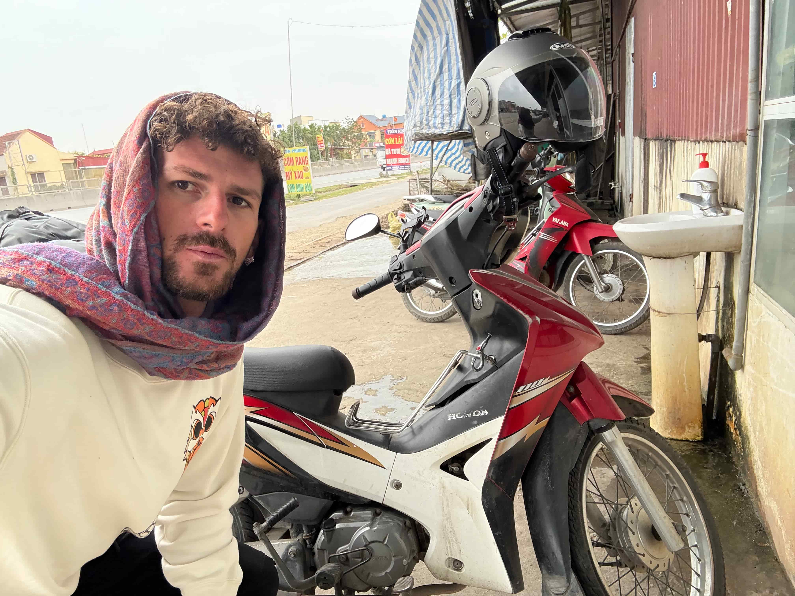
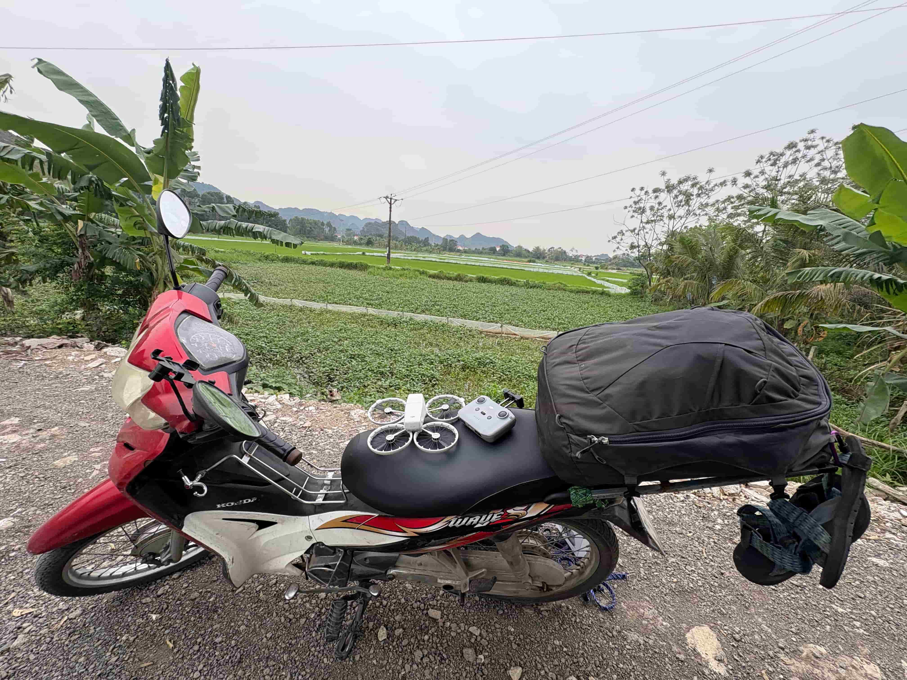
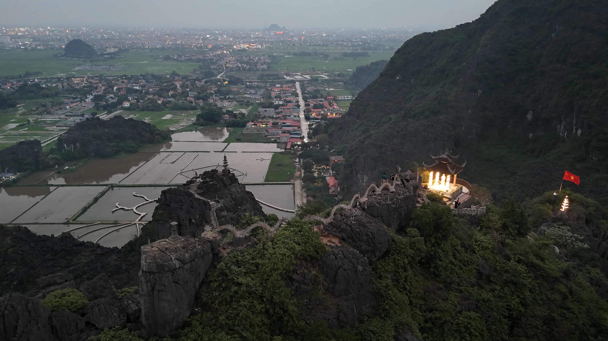

Monday March 31st, 2025, Ninh Binh, Vietnam
On March 22nd 2025, I reached my 6 month mark of travelling the world. As I was in China I was not able to reflect and provide a proper half year summary. Please see the awards for the past 6 months.
🏆 Trip Accolades
Best Urban City: Tbilisi, Georgia 🇬🇪
Best Coffee: Kigali, Rwanda 🇷🇼 & Pakse, Laos 🇱🇦
Best Beach: Koh Rong, Cambodia 🇰🇭
Best Nature: Nong Khiaw, Laos 🇱🇦 | Serengeti, Tanzania 🇹🇿 | Annapurna Circuit, Nepal 🇳🇵
Best Food: Georgia 🇬🇪 | Thailand 🇹🇭 | China 🇨🇳
Favorite Culture: Nepal 🇳🇵
Best Party (before I retired): Kenya 🇰🇪 | Thailand 🇹🇭
Best Water: Georgia 🇬🇪
🌍 Coolest Experiences
- Hunting in Tanzania 🇹🇿
- Annapurna Circuit, Nepal 🇳🇵
- Nong Khiaw Homestay, Laos 🇱🇦
- Thakhek Loop, Laos 🇱🇦
💙 Favorite Places
- Kathmandu, Nepal 🇳🇵
- Chengdu, China 🇨🇳
- Koh Rong, Cambodia 🇰🇭
- Nong Khiaw, Laos 🇱🇦
- Chiang Dao, Thailand 🇹🇭
🌟 Favorite Country
Nepal 🇳🇵 | Laos 🇱🇦
😵 Craziest Sleeps
- Nong Khiaw Mountain, Laos 🇱🇦
- Lonely Beach Bungalow, Cambodia 🇰🇭
- Life Spa, Chengdu, China 🇨🇳
March 31st 2025, Ninh Binh, Vietnam
This was one of the coolest days of my life. I came to Vietnam with really no plan, arriving late Saturday night. Today, I bought a motorbike to explore the country.
I had heard of people buying motorbikes in Vietnam to reach harder-to-access landscapes, but since I’m already deep into my trip, I wasn’t sure if I’d have the energy to do it. On Sunday, I randomly walked into a bike shop and talked to the French owner, who gave me tons of info. He told me about an amazing off-the-beaten-path route in northern Vietnam, what to do if I got pulled over by the police, and the pros and cons of renting vs. buying. He was great.
After our conversation, I went on Facebook and joined almost 10 different Vietnam backpacker and motorbike groups. The French shop owner told me exactly what bike to look for: a Honda Wave, 110cc, semi-automatic. While scrolling through Facebook, I saw a listing for this exact bike. I messaged the seller, and it turned out he was staying at the same hostel as me! His name is Tuur, a Belgian guy living in Koh Tao. He was selling the bike for a really good price—7.5 million dong.
I was skeptical about buying anything through Facebook groups, but when I met him in person, he seemed like a super authentic, down-to-earth guy. This morning, I test-drove the bike, and it rode great. He told me he had recently serviced it, and it was a champ. We agreed on the price, and I bought the bike!
It took almost 1.5 hours to figure out how to transfer the money. Europeans use an app called Revolut, which has issues with American accounts. My brother Blake came in super clutch and helped us out—thanks, bro, I love you! I had to Apple Cash Blake, who then put money on his Revolut and sent it to me so I could transfer it to Tuur. Don’t ask me why.
The bike came with a phone holder, a rack for bags, and bungee cords to secure them. The French bike dealer told me to get an oil change every 500 km, which I plan to do. You need a blue card for vehicle registration, which I got. Technically, you’re supposed to have an international driver’s license, but nobody does. The cops try to pull you over for bribes, but there are ways around it.
After buying the bike, I drove 122 km from Hanoi to Ninh Binh! It was a chill drive, but really cold—I had to layer up. I also bought a new helmet with a face shield because the one Tuur had didn’t have one, and bugs are bound to fly in your face.
I arrived in Ninh Binh and stayed at a $4 hostel. I chilled and went to the Laying Dragon Viewpoint, flew my drone there, and got some good shots. Afterward, I hit the sauna and had goat meat for dinner—this town is known for goat for some reason.
It was a long day of driving, but I’m moving forward tomorrow. So stoked!



March 30th 2025, Hanoi, Vietnam
Today was my first full day in Vietnam, in the northern city of Hanoi. At first impression, it’s my least favorite city in all of Southeast Asia. It’s too touristy, there’s not much to do, and people are constantly trying to sell you stuff and haggle with you. The food, however, is really good.
In the morning, I went to a café and tried the famous egg coffee. It was thick, creamy, and delicious. After that, I hit the gym and had a solid workout—it cost just over a dollar, which was a big difference from China. It feels strange being back on the third-world backpacker route, but I adjusted pretty quickly. Honestly, I adjust quickly anywhere at this point.
After the gym, I met up with my good friend Ben Shifrin from Dunwoody, GA. Ben and I first met in Chiang Mai, Thailand, after I noticed his Dead & Co. sticker. Since then, we've crossed paths in Pai, Chiang Rai, Vang Vieng, and now Hanoi. It’s always awesome running into a fellow American Jewish backpacker with so much in common. We laughed, shared experiences, and I felt really grateful for his friendship and the moments we’ve shared.
Later, we visited the Hỏa Lò Prison. Originally, it was used by the French during their occupation of Indochina to imprison Vietnamese political dissidents who opposed colonial rule. The museum spent a lot of time detailing how brutally the French treated Vietnamese prisoners. After Vietnam gained independence, the same prison was used to house American POWs, mostly captured fighter pilots during the Vietnam War. According to the museum, the Americans were treated well—they were allowed to play sports, and supposedly, they were even given food more expensive than what the locals ate. It’s always funny seeing the bias in museums. This was the infamous prison where John McCain was held. Of course, the reality is that the Vietnamese tortured American prisoners.
Oh, before the prison visit, I had my first phở of the trip, and it was really good. After the museum, Ben and I grabbed bánh mì, a famous Vietnamese sandwich. I never understood the hype back home, and I still don’t—it’s literally just a sandwich. I guess the bread, a French baguette, is what makes it bánh mì. That influence, of course, comes from French colonialism.
At night, we went to Train Street and watched the famous train pass through a narrow alley lined with cafés. It was actually pretty cool.
Tomorrow, I (hopefully) leave Hanoi and start a crazy adventure. Stay tuned for updates.


March 28th 2025, Chengdu, China
After two long days at the national park, I took the day to chill. In the morning, I hit the gym and had a solid workout. In the afternoon, I got cupping again and a traditional Chinese massage.
The massage was... interesting. The lady rubbed my muscles in ways I hadn’t experienced before. It wasn’t very intense, but she managed to hit the right spots. Traditional Chinese massage often includes moxibustion, a practice where dried mugwort is burned near the skin to promote healing and circulation. The heat from the burning mugwort (called moxa) is believed to stimulate the flow of qi and blood. Afterward, she advised me not to drink cold beverages, as Chinese medicine teaches that cold can slow circulation and interfere with the body’s ability to heal by constricting blood vessels and stagnating qi.
After the massage, I felt both alert and relaxed—maybe my nervous system got a boost.
That evening, I celebrated Shabbat at Chabad of Chengdu. I originally went to the address listed on Google Maps, which turned out to be 30 minutes outside the city—and completely wrong. Luckily, an Israeli guy I met at my hostel, Tair, sent me the correct location. I was the last one to arrive due to the fiasco, but the atmosphere was intimate, with only about 25 people.
I met Inbar, an Israeli woman who moved to Chengdu to study Chinese medicine. The rabbi was super warm and energetic, similar to Mendy. It was refreshing to be at a smaller Shabbat table rather than a massive one for travelers. A lot of the Israelis there were either trying to start businesses or had already settled in Chengdu.
One of the most interesting people I met was Ezra Haleva, a 25-year-old who had worked at Microsoft, quit his job, and was now trying to build software in Chengdu. He was easily one of the funniest guys I’ve ever met. It was amazing connecting with so many cool and different people. The food was solid, too.
After Shabbat, I went out briefly with Ezra, Tair, and another guy. Then I checked into my accommodation for the night: Tang Yue Life Spa. It’s open 24/7, and you can actually stay overnight there. I did a midnight sauna and jacuzzi before trying to sleep.
I assumed there would be a dedicated sleeping area, but nope—it was every man for himself. You just had to find a spot on the ground. I managed to claim a nice corner, but there were at least 500 people staying the night. I slept as well as you possibly can when you're on the floor, surrounded by hundreds of strangers.
It was definitely a super unique experience.
March 27th 2025, Chengdu, China
On Wednesday, March 26, I took the high-speed train from Chengdu to Huanglong and Jiuzhai Valley. Upon arriving near the Tibetan Plateau in northwest Sichuan province, I immediately noticed several differences. First, there was still snow on the ground, and the incredible mountains reminded me of Nepal. Second, the Tibetan influence was everywhere—beautiful temples and villages scattered throughout the region.
I arrived without really knowing what to do or how to get anywhere, but that’s the beauty of traveling. I knew I wanted to visit Huanglong, but I had no idea what it actually was or what the trip would entail. I asked someone about Huanglong by simply saying, “Huanglong?” and they pointed me toward a bus. I hopped on, not realizing the ride would take an hour and a half.
When we arrived at Huanglong National Park, I bought a ticket for the cable car up the mountain. From there, I hiked down, taking in the breathtaking mountain scenery and surreal-colored pools. I also flew my drone for the first time and captured an incredible shot.
After exploring Huanglong, I took a two-hour ride to Jiuzhaigou, home to the most famous national park in China. By then, I was pretty exhausted, so I grabbed dinner at a Tibetan restaurant. I tried yak yogurt, really good butter tea, a yak meat pie, and some delicious dumplings. The restaurant had a great atmosphere, making for a nice way to end the day.
The next morning, Thursday, March 27, I headed straight to Jiuzhaigou National Park. Tickets were supposed to be purchased in advance online, but I didn’t believe that—and it turned out to be cheaper in person via WeChat. I took an electric bus into the park and spent the entire day walking around, exploring waterfalls and vibrantly colored lakes. While Jiuzhaigou had the most stunning lakes, I thought the mountains in Huanglong were more impressive.
After a full day of exploring, I took a two-hour bus ride back to the train station and caught a train. Since I booked too late, I didn’t have a seat and had to sit on the floor for the two-and-a-half-hour ride. It made for a long travel day, but it was absolutely worth it.
Seeing China’s unique landscapes and getting a glimpse of Tibetan culture outside of the big cities was an unforgettable experience.


March 25th 2025, Chengdu, China
I went to the gym in the morning and had a nice, relatively normal day. Here in China, they have something called a “life spa.” The one I went to was 11 stories tall. You can use the sauna and hot baths, but there’s so much more. There’s a full restaurant and over 20 different rooms to relax in—a salt room, a blue light room, a stone room, a volcano room, and more. They even have video games to play. You can even sleep there. I paid about $15 for the sauna and had some amazing Mapo Tofu there.
In the afternoon, I went back to People’s Park for some tea. A dad and daughter invited me to sit with them. The daughter wanted to practice English, which was really nice of them. I ate sunflower seeds with the dad, and we talked about life and culture. The girl was 23 years old and studying medical imaging. She said school is incredibly competitive and grueling. She told me, "Life is a struggle and will be for all my life." She wants to travel but sees no path with school.
I asked about religion in China, but she didn’t want to talk about it. She used a translator app to tell me that religion is a sensitive topic. There are autonomous prefectures for minorities, where religion is allowed but under the oversight of the government. I didn’t fully understand how these autonomous prefectures for Tibetans and other minorities work. From what I gathered, they are still part of China and under Chinese control, but they are given some cultural autonomy. Ultimately, China wants the land for resources and strategic control.
China officially recognizes 56 ethnic groups. The Han Chinese make up about 92% of the population, while the remaining 55 ethnic minorities each have distinct languages, cultures, and traditions. Some of the largest ethnic minorities include:
Zhuang (壮) – The largest minority, mainly in Guangxi, with a language related to Thai.
Hui (回族) – Chinese-speaking Muslims, found across China, especially in Ningxia.
Manchu (满族) – The ruling ethnic group of the Qing Dynasty, now mostly assimilated into Han culture.
Uyghur (维吾尔族) – A Turkic Muslim group in Xinjiang, with cultural ties to Central Asia.
Tibetan (藏族) – Predominantly in Tibet and parts of Sichuan, with a distinct Buddhist culture.
Miao (苗族) & Yi (彝族) – Indigenous groups in Yunnan, Guizhou, and Sichuan, known for unique clothing and music traditions.
Mongol (蒙古族) – Descendants of Genghis Khan’s empire, mainly in Inner Mongolia.
I think religion is controlled to cement a unified national identity, which is crucial to the government.
The dad was a big NBA fan and likes James Harden. He asked about the differences in consumption habits between China and the USA. It was a great question that made me think. Both countries consume a lot, but in different ways. The USA consumes more food, expensive cars, and other luxuries, while China consumes more luxury brands and technology. China is super capitalist—it’s crazy. There’s so much consumerism and economic competition.
Also, in People’s Park, you see people playing badminton, dancing, and playing games. I think activities like this help strengthen national identity too.


March 24th 2025, Chengdu, China
Wow, I’m writing this all in retrospect, and it’s crazy how much I did in a week. On Monday, I woke up in Dujiangyan and went to Panda Valley to see the famous Sichuan pandas. The main panda center is in Chengdu, but this one in Dujiangyan is smaller and more scenic. I walked around, and it was nice, but I didn’t go crazy for them. Some of my friends and many Chinese people are obsessed with pandas. I met a Chinese guy on the bus in the mountains yesterday, and he said that seeing a panda is the pinnacle of the Chinese experience—something like that.
That same guy had asked me about America since he had never talked with a foreigner before. I told him that, for the past handful of decades, the world has tried globalization. It worked for some time, but now countries are becoming more protectionist, which has both benefits and drawbacks. I’m proud to be an American.
After seeing the pandas, I took the train back to Chengdu. The trains leave on the dot—you can’t even enter the gate until like two minutes before departure, and then it departs immediately.
In Chengdu, I got a much-needed haircut. I went to a proper salon, and it was great. The barbers and I chatted, and he shed some light on Chinese society. He also said how much he likes America. All he wants to do is drive a Harley motorcycle, but he said that would never happen in China due to restrictions. Every bike and car here is an EV. He likes how you can do whatever you want in America.
He gave me a good cut, and afterward, I went to drink tea. I found a Michelin-starred teahouse, and they squeezed me in. I drank organic red oolong. I really like roasted green tea. The teahouse, called Mi Xun, was super cute.
At night, I went to the famous Sichuan Opera. I’m not much of a theater person, but this opera was fantastic. It’s called an opera, but there’s no singing—just crazy acrobatics, skill acts, a mask-changing show, and fire-breathing. There was a storyline, but it made no sense to me. The coolest trick was a girl who spun a table on her feet.
After the opera, I went out and ate rabbit. Rabbit is actually the leanest meat—high in protein (about 27g per 100g serving), low in fat and calories compared to beef, pork, or even chicken, and rich in B vitamins, phosphorus, iron, and selenium. It’s also easily digestible due to its fine texture and low fat content.
I also had Kung Pao chicken, which Chengdu is known for. The spice killed me, but it was good. I was so tired from running around the past few days that I just crashed after that.


March 23rd 2025, Chengdu, China
Sunday, March 23rd, I took a train to the ancient Daoist mountain, Qingchengshan. Located just outside Chengdu, this mystical mountain is draped in mist and legend. Known as the birthplace of Daoism, it’s home to ancient temples, lush forests, and peaceful hiking trails. Daoism (or Taoism) is an ancient Chinese philosophy and spiritual tradition centered around living in harmony with the Tao (道)—the natural flow of the universe. Rooted in simplicity, balance, and spontaneity, Daoism has influenced Chinese culture, medicine, martial arts, and even modern mindfulness practices. Some key concepts include the Tao (道), which represents the Way, the underlying force of the universe that moves through everything. It’s nameless, formless, and beyond human comprehension, but its presence can be felt in nature and life’s rhythms. Wu Wei (无为) is the art of effortless action, embracing the flow rather than forcing things, like a river shaping a mountain over time. Yin & Yang (阴阳) symbolize the balance of opposites—light and dark, strong and soft, action and stillness—everything exists in a state of dynamic harmony. Ziran (自然) emphasizes spontaneity and naturalness, encouraging people to live authentically and in tune with nature.
There are two sides to the ancient mountain: the front and the back. The front side is more touristy and has many monasteries, while the backside is known for its waterfalls and scenic hikes. I ended up hiking for about five hours, and I was so gassed. It was way more crowded than I expected—I had to push past oldies and kids. The scenery was nice but not mind-blowing. But after traveling so far, you have to accept that not every experience will blow your mind. At times, I felt like I was in Kung Fu Panda. I wanted to train kung fu with a Shaolin monk, but apparently, you need to commit for months. The hike was still a cool way to get out of the city. I made it to the top, but the view wasn’t as nice as I had hoped—lots of construction.
After the hike, I went to the ancient city of Dujiangyan (都江堰). Dujiangyan is a 2,000-year-old irrigation system in Sichuan Province. Built during the Qin Dynasty (around 256 BCE), it remains one of the oldest and most sophisticated water management systems in the world—and it’s still in use today. Unlike traditional dams, Dujiangyan doesn’t block the river but instead diverts and distributes water naturally, preventing floods and providing irrigation. This ingenious design helped turn Sichuan into China’s agricultural heartland, earning it the nickname "Land of Abundance" (天府之国).
I found an awesome and cheap place on Trip.com. The owner, whose English name was Spencer, was a sweetheart. He spoke some English and told me he liked the USA. Even though I was exhausted, I gathered enough energy to walk to a famous bridge and riverside. I wanted to fly my drone for the first time, but I decided against it—it was dark, windy, and over water. Flying a drone is actually not that straightforward, and it would’ve sucked to lose it on my first try. Instead, I drank tea at the hotel and went to bed. A much-needed private room rest.


March 22nd 2025, Chengdu, China
I slept terribly. An older Chinese gentleman in my room had a full-on conversation on speakerphone for much of the night. On top of that, my stomach was in shambles from the hotpot. I woke up late and feeling lethargic.
Yu, the guy I met the night before, invited me to a traditional Chinese bathhouse with him. Of course, I said yes. You know I love saunas, so I was curious to see what it would be like in China. Yu’s family is from Northeast China, near Manchuria, where Chinese bathing culture originated.
We took the metro out of the city to a bathhouse. Before going in, we grabbed wonton dumplings from a small shop inside an old apartment building—super authentic. The bathhouse cost 116 yuan and included a massage and a scrub. First, we sat in a literal bathtub of hot water. Then we used the sauna, which wasn’t as hot as I expected. After that, we laid on massage tables while an older Chinese man scrubbed us down with a coarse cloth, supposedly to remove dead skin. Then came the massage—super aggressive but great. It was a fun experience overall. Old Chinese men were smoking cigarettes inside, something you’d never see in America.
At this point, I should comment on the sheer number of Chinese apps you need, which is a huge part of the China experience. Yu, being a local, graciously gave me some insider tips. Let me break it down concisely:
Alipay: This was my favorite and by far the most important app. It’s in English, has a built-in translator, and does everything. You pay for everything with a QR code, send money to friends and merchants, and even get a metro QR code instead of buying tickets all the time. It’s also integrated with other apps—like the bike rentals, which you can unlock and pay for directly through Alipay.
Didi: This is China’s version of Uber. You can actually access it through Alipay, but I downloaded the standalone app. It’s insanely efficient—cars arrive in less than five seconds, unlike in the U.S. Every car in China is electric, so the streets are dead silent.
Trip.com: I had never heard of this before coming to China, but Yu put me on. It’s the best app for booking trains and hotels—it’s in English, super cheap, and seamless. Trains don’t require a ticket; you just scan your passport, and facial recognition does the rest. It even generates AI-powered itineraries, which I used.
Amap: This is an English-friendly map app. It’s kind of janky, but it gives metro directions, which is helpful.
WeChat: You’ve probably heard of this one. It’s the main messaging app in China and also works for payments like Alipay. Some parks, shows, and attractions only sell tickets through WeChat, so I had to start using it. I also added a few Chinese people I met on there.
Another important thing: choosing the right VPN is crucial. My original VPN didn’t work because Chinese WiFi blocked it. Yu recommended a different one, which I got a free 7-day trial for, and it worked perfectly.
Oh, and in the afternoon, I made a big purchase—I bought a DJI drone! DJI is a world-class drone company, and since they’re made in China, I saved a good chunk of money. I can’t wait to use it.
To end the day, I went back to People’s Park at night for some tea.


March 21st 2025, Chengdu, China
I’m writing this from the airport in Chengdu on Saturday, March 29th. The past week in China has been incredibly busy, and due to internet restrictions and VPN issues, I haven't been able to post until now.
On Friday, March 21st, I flew from Phnom Penh, Cambodia, to Chengdu at 6 AM. The 24 hours leading up to that flight were absolutely crazy. On Thursday, March 20th, I woke up in Siem Reap at 4 AM to watch the sunrise over Angkor Wat for the spring equinox. I rode my semi-automatic bike for 30 minutes to the main temple, arriving around 5 AM and staying until about 7:30 AM. It was a bit cloudy, so the sun didn’t rise directly above the temple, but the experience was still incredibly beautiful and peaceful. I laid in the grass, meditated, and soaked in the balance of the equinox—a moment I had purposefully extended my stay in Cambodia to witness.
After taking some nice pictures, I returned to my hostel and relaxed for most of the day, exhausted from the early wake-up. That night, at 8 PM, I took my first sleeper bus of the trip from Siem Reap to Phnom Penh, arriving in the capital around 2 AM. When I got there, I saw people sleeping outside everywhere and had no idea why. Turns out, the airport actually closes from midnight until 4 AM! Since I had a weird surge of energy, I just chilled instead of trying to sleep, which was nearly impossible anyway.
The airport reopened at 4 AM, but no workers showed up until about 5:15 AM—so much waiting. At the airport, nearly everyone around me was a Chinese man. This was my first glimpse into Chinese mannerisms—some had a total lack of social awareness, sneezing openly, playing phone audio at full volume, and loudly hocking loogies. This would become a recurring theme throughout my time in China.
I eventually boarded my flight and arrived safely in Chengdu. Since I didn’t have a visa in advance, I was attempting to use the brand-new transit visa. At the airport in Cambodia, the airline attendant took an extra 45 minutes checking my documents to ensure everything was in order. Luckily, I was prepared—I had printed my onward flight to Vietnam and my hotel booking in Chengdu.
The same scrutiny happened upon arrival in China. The immigration officers thoroughly checked my documents, asked about my purpose for visiting, and seemed confused when I explained I was backpacking. Eventually, one officer understood and granted me the 240-hour transit visa. I was free to go!
Stepping out of the airport, I felt like I was back in the first world—everything was clean, efficient, and designed in a brutalist style. I also noticed a lot of Russians in the airport. Knowing how difficult it is to access the internet in China, I had come prepared with all the necessary Chinese apps and a VPN to access Google, Instagram, and WhatsApp, since China’s WiFi blocks all of them.
From the airport, I took the metro into the city and arrived at my hostel. Still running on adrenaline, I immediately set off to explore. My first stop was Jinli Ancient Street, where I bought a traditional Chinese shirt, had some incredible duck, and tried an oolong milk tea from Chagee. I didn’t see a single other Westerner, which made me love it even more—nobody spoke a word of English, and I felt like I had stepped into an alternate universe.
Next, I visited People’s Park for some tea. Chinese tea culture is amazing—people just sit, drink tea, chat, and play games. In the park, locals were dancing and playing Chinese board games I had never seen before. While drinking my tea, an older man approached me and, without much warning, stuck a long stick in my ear and vibrated it using a metal tuning tool. This was traditional Chinese ear cleaning. It felt weird, and I have no idea if it actually worked.
After 36 hours of near-constant travel, my body was aching, so I decided to find a place for Chinese cupping therapy (Ba Guan). I walked 45 minutes to the city’s main shopping district, Chunxi Road. This is when I really understood China—every street was packed with malls and shopping centers. Consumerism everywhere. And Chengdu isn’t even one of China’s biggest cities! The sheer scale was overwhelming.
I finally located the cupping shop on the seventh floor of a tiny building in an alleyway. Since I wasn’t using Google Maps, I had to rely on Amap, a Chinese app in English. The problem? Most of the places I wanted to visit were locally owned and tucked away on random upper floors of high-rise buildings. Somehow, I managed to find it.
While in the shop, a guy overheard me speaking English and struck up a conversation. At first, I assumed he was the owner’s son or something, but it turned out he was a Chinese-American backpacker, just like me. His name was Yu, a 30-year-old who had studied at the University of Washington and worked in international education before setting off to travel the world. He invited me to dinner, and I immediately said yes—it was so helpful to have someone who spoke Chinese.
We went to a cheap hotpot restaurant in a mall and ordered catfish hotpot. In Chengdu, they eat jelly with hotpot to cool down the spice, which I found interesting. Sichuan Province is famous for its food, spice, and ancient culture, and this meal definitely delivered on the spice part—it was delicious but absolutely wrecked my stomach.
This was one of the craziest 48 hours of my life, but I was so stoked to finally be in China.


March 19th 2025, Siem Reap, Cambodia
My dear friend Count Katz has challenged me to divulge the inner machinations of my mind to the blog. A couple of my friends and peers have asked me what I have learned on my travels, or any wisdom to share. Recently I have not had any novel insights, and I believe that is okay. This trip is likened to sailing across the ocean. There are three main parts, leaving the shore, sailing in the vast expansive sea, and returning to shore. The majority of insights and growth occurs when you have to set sail from familiar lands. This for me happened in the first 3.5 months of my trip. Having new freedom allowed me to understand myself deeper, my likes and dislikes, values to stand up for, and what kind of man I want to be in this world. In the beginning I felt free, I felt alive, I felt strong and growing in the right direction. I still feel this way but in a different form. I recommend everyone if it is within their means to backpack for three months. What you can learn is astonishing. I am currently in the second stage of the voyage, sailing in the deep sea with no sight of shore. I have learned many things from leaving shore, and now it is time to integrate them fully into my ego and psyche. The most important thing is taking care of your body, mind and health. Every day a top priority is moving my body, walking everywhere, working out, going to the sauna, drinking coconuts or fresh fruit smoothies. This is a huge takeaway from my voyage. Prioritizing health makes your energies alive, mind sharper, and body stronger. It is important to fully integrate these learnings now while I am free in Asia because it will be much harder with all the push and pull returning to the US. Another note on health is I barely drink anymore. This has made me feel so much healthier and better. A lot of travelers just party and drink and it has been an interesting evolution telling people I do not do such things. Actually standing up for your values in real time makes you evolve. I also learned there are so many ways to make money, so many different ways to adventure, so many different ways to live. Everybody loves giving each other advice. Do not take anyone's advice, even mine. Go into the trenches, experience, and figure out what makes you happy. I have met snowboard instructors who work half the year, travel for the other half, I have met people who move to Asia fully to start a hostel or restaurant, I have met digital nomads of 3 years traveling the world. It is cool seeing all the different styles of life and seeing where I can fit in. I still do not know, and I think that is okay. I was gifted with an amazing intellect and a strong body, I hope I can use both to the maximum ability. At times I am interested to just move to a beach town and start a hostel or restaurant. At times I feel like this is not using my intellectual, mathematical mind fully. I am confident the right opportunity will find me at the right time. I cannot get ahead of myself because I am still in the middle of the sea. Soon, I will have to prepare for returning for shore. My current plan is traveling for a whole year., another 6 months. That gives me even more time to really be present and learn more. Tomorrow is the equinox, a time for balance and reflection. Friday I leave for the fascinating lands of China. On Saturday marks the official 6 month mark, half a year, of my travels. In 2.5 weeks it is my 25th birthday.
March 18th 2025, Siem Reap, Cambodia
10 temples 1 man. Today was my first day visiting the celestial city of Angkor. I bought a three day pass for 62 dollars to explore this amazing ancient city. The hostel offers a private guide for 35 USD to give you all the information you need. Obviously I didn't do that! I have a free pocket guide called ChatGPT. I prompted Mr. GPT to be the most profound Angkor scholar of politics, history, architecture, and religion and he did a great job. He told me details of each place and hidden things to look for! You are such a good boy Mr. GPT. It is crazy to see AI replacing jobs in real time! I rented a semi-automatic motorbike, my weapon of choice since the Thakhek loop, for 8 USD/day. I completed the Angkor grand circuit in 2 hours. I guess this is pretty fast. My favorite temples were Bayon, for the many Buddha faces, and Preah Khan for its vastness and intricate sculptures. Some of the temples used to be universities, monasteries, cremation sites, or dedication to family members. Driving through this area you really are taken aback by the vastness of this place. It is so cool driving through a huge ancient city on a modern motorbike. The dichotomy is real. The nature is pretty beautiful as well. There are huge trees and the whole Angkor city is surrounded by jungle. Some temples are being overtaken by trees and nature. I am actually pleased that it was not as busy or touristy as I expected. I did not go to the main temples, Angkor Wat and Ta Prohm because I am saving them for the equinox. I guess that is everything I want to say about the experience. Last night I finally bought The Economist year subscription. Typically it is over 250 dollars a year. I was able to get a 75% off discount through my brother's student email. I read some articles already and it is so crazy how much you can learn about the world. I highly recommend this magazine for anyone interested about the world. There is so much damn info out there!


March 17th 2025, Siem Reap, Cambodia
This afternoon I went on a 16km cycling tour through the countryside of Siem Reap. I learned some cool stuff and think it is worth sharing. First we went to a temple just outside the city. At this Buddhist temple there was a temple from the Angkor period. The guide explained to us that the temple is a Hindu temple. He explained as Cambodia is almost 100% Buddhist, their traditions and culture are a combination of Hinduism, Animism and Buddhism. Animism is the oldest in Cambodia and most influential in the daily lives of the people. In the 1st century India brought over Hinduism. Theravāda Buddhism entered Cambodia through Sri Lanka and Burma, while Mahayana Buddhism came via India and China around the 5th century.Early Khmer kings practiced both Hinduism and Buddhism together, building temples for both religions. Still today Cambodians whenever they see a Hindu temple pray tot he associated Hindu G-D. Temples dedicated to Vishnu are oriented west because Hindu tradition says thats where he resides in the cosmos. Cambodians bury their dead facing the west. After visiting the temple we saw the sunset overlooking a rice field and lotus flower field. Our guide then started to explain modern Cambodia to us. 85% of Cambodians live under the poverty line. The main source of income and the biggest export is still agriculture. Education is a huge problem and over half the population cannot read. Ever since the Cambodian genocide the same government has been in power. The government is one of the most corrupt in the world and is holding Cambodia back. Remember when I said Phnom Penh was impressive with high rises and such. Our guide told us that the Cambodian elite and Chinese. In Phnom Penh you see many Land Rovers driving round actually. I was quite confused why. China owns the Siem Reap airport and the Phnom Penh airport. They are loaning huge sums of money to Cambodia. It does not seem like Cambodia will be able to pay it back. Cambodia is still reeling from the brutal genocide here. The genocide from 1975 to 1979 was one of the deadliest atrocities in 20th century, orchestrated by a radical communist movement, the Khmer Rouge, led by Pol Pot. It resulted in 2 million deaths, a quarter of the Cambodian population. Cambodia gained independence from France in 1953. In the 60s they tired to remain neutral but were drawn into the Vietnam War. The US secretly bombed Cambodia (1969-1973) to target North Vietnamese forces hiding there. This destabilized the country and inadvertently fueled support for the Khmer Rouge. In 1970 there was a coup and civil war. In 1975 the communist Khmer Rouge took power. Once in power Pol Pot wanted to create an agrarian, classless utopia, eliminating urban life, capitalism, and intellectualism. That is so dumb bahahaha. Anyone associated with former government, intellectuals, professionals, or even wore glasses was targeted for execution. The Khmer Rouge waged border attacks against Vietnam and then Vietnam invaded in 1978. By 1979 Vietnam created a government. The Khmer Rouge retreated to the jungle and waged guerrilla war until the late 1990s. In 1991 a peace agreement was signed and in 1993 Cambodia held elections, restoring the monarchy. Cambodia is a constitutional monarchy with a parliamentary system, but in practice, it has been dominated by a single party for decades. After the war there were only 100 teachers for a population of 4 million! You can see why it has taken them so long to recover and they are still not recovered. Ok that’s enough. He also showed us lotus flowers and how they are used for offerings to Monks. The stems of the lotus flower can be eaten and inside the stem they make silk from them!


March 16th 2025, Siem Reap, Cambodia
Today was nice. This morning I visited the Apopo Center in Siem Reap. This center trains the African giant pouched rat to sniff out unexploded bombs and landmines for the purpose of defusing them. Cambodia is covered in unexploded bombs and landmines from the Vietnam war as well as from the Cambodian genocide. Thousands of people have lost their lives from stepping on an unexploded bomb and even more have lost limbs and eyes. In the streets of Cambodia this is very obvious. You see many people missing limbs and eyes. It is the sad reality of a country ravaged by war. The rats in Cambodia come from Tanzania where they are born and trained. They are trained via a clicker, similar to how you train a dog. When they hear a click they are rewarded with banana or peanuts. The rats are trained to sniff out TNT, gun powder, and other explosive material. They can smell 1 trillionth of a gram of TNT! They also can smell one meter long and deep. Rats are perfect for the job because they are light and move fast. They can clear the size of a tennis court in 30 minutes. The hero rats usually work from 6AM to 9AM clearing various areas in the country. There are four teams in Cambodia scattered throughout. 10 rats are a part of the Siem Reap team and one of them is retired. It was super cool to see the rats in action. I got to hold one and it licked me! I also wanted to talk about how I tried Kefir today. Kefir is a creamy, tangy drink made from milk or water using kefir grains (colonies of yeast and bacteria). It’s high in protein, probiotics, and calcium, supporting gut health and digestion. It differs from kombucha which is slightly fizzy, tangy-sweet tea fermented with a SCOBY (symbiotic culture of bacteria and yeast). It’s rich in antioxidants and probiotics, promoting digestion and detoxification. Kefir is actually stronger in probiotics. I had passionfruit turmeric flavor and mango lavender flavor. They were both phenomenal. I think I like it even better than kombucha. I might go the local Kefir brewery tomorrow.


March 15th 2025, Siem Reap, Cambodia
Welcome to Siem Reap, the gateway to the celestial city of Angkor, the largest religious monument on the planet. I will have ample time to learn about Angkor and tell you about it here. For now I want to talk about last night and today. Last night I went to Shabbat diner at Chabad of Phnom Penh. The rabbi told me to sit at the English speaking table for it to be easier for me. The English speaking table consisted of A Canadian man in his late 60s, an American woman in her late 50s, and a danish guy in his late 40s. I was actually really surprised about all the great conversations we had, way more interesting and deep than sitting with 20 year old Israeli backpackers. So let us go character by character. The Canadian man currently lives in Kep Cambodia, retired and taking it slow. The most surprising thing was he used to live in Palm Harbor Florida for 9 years! This is where I went to high school and properly live. He travelled around the world to over 50 countries and had international businesses. He sold insoles to shoes, yarn and more. He loved the jibber jabber but he gave some good insights into life. When you walk outside your door opportunities come at you every day. 1 in a million stick. He never planned any of his businesses, just was open to opportunities that came his way. He said stay healthy, everything else is bullshit. Finally he mentioned how people all across the world are essentially the same. Food, water, shelter, clothes and a better future for their children is what everyone wants. People will go to extreme lengths to ensure a better future for their children The older American women hailed from New York. She lives in Phnom Penh retired as well. She worked for USAID all across the globe, in Senegal and other cool places. She retired from USAID just before Trump cancelled worldwide funding. She said how her coworkers all lost their jobs and were told to return to the US. It was really cool to see older North American people so energetic and adventurous and well travelled. Lastly the Danish guy was pretty interesting. He lives in Sweden but is Danish. He just found out his father is Jewish and got connected with Chabad. He is traveling around Asia to see where he could retire. He likes Chiang Mai because they have a pickleball community. The guy was a little odd but had some good topics to chat about. We talked about various forms of renewable energy, how nuclear is obviously the best. We discussed which country will implement UBI first. I said UAE. I think the UAE will pioneer futuristic economics and policies. We also talked AI and he gave some weird ideas. Overall I really enjoyed talking to these older people. I believe I have mentioned I actually typically enjoy talking to them rather than people my age due to the depth and the amount I can learn. Ok so today I took a 6 hour bus to Siem Reap. It seems like a cool city with lots to explore other than the temples. I met a young Korean kid about 12 years old and maybe his older brother at the sauna today. The young Korean boy told me I was very handsome. At first I thought it was weird but I guess it’s just a cultural difference. When I was in Korea 2 years ago a Korean guy also told me I was handsome in the sauna too! I have only been told I am handsome by guys from Korea, and one guy from lao. That made me think, should guy friends compliment their guy friends for being handsome more in the west? Anyway these Koreans were cool and are in Siem Reap for 4 months doing a wake boarding camp. The older guy is a professional wakeboarder. I am considering going to the cable park tomorrow. Anyway I am tired, I was not planning to write today but there is always something worth sharing!
March 14th 2025, Phnom Penh, Cambodia
One thing I wanted to mention before I forget is about toilet paper. I have been so desensitized to it since being in SE Asia for three months that I forget how absurd it is. You cannot throw toilet paper in the toilet, you must place it in a trash can. At first I thought this was funny and not so serious. However, in literally every toilet, whether a hostel, restaurant, or cafe, it explicitly has signs that say do not throw toilet paper in toilet, put it in a trash can. This is because the plumbing systems are so bad here that it easily clogs the lines. At first I never threw it in the trashcan because that is weird, but now I do since it is so prevalent. Anyway today I chilled heavy. I have been taking these past two-three weeks in Cambodia to recuperate my energy for an exciting next couple of months. As you remember I was getting burnt out of traveling after Lao. I feel like these past couple of weeks has really helped get me excited to do adventurous things on the go again. I am stoked for Angkor Wat equinox, China and the Ha Giang Loop in Vietnam. It has been really great taking it slow and working on my body and mind intensely the past weeks. Cambodia was placed perfectly in my trip. I really like Cambodia because honestly there is not much to do! Lao is so adventurous and rugged, Thailand is too big and party, and Cambodia fits right in when you need to chill the most. Last night I went to Chabad for Purim and it was nice. I went to the casino with some Israelis after which was fun. They love to gamble. I only did 20 dollars on roulette. Today I needed to delete some pictures from my phone because my storage is getting full. Going through my pictures made me emotional, grateful, and confident on my path. Specifically I look back on videos I took 6 months ago before leaving Dallas and can see how evolved and a new person I am. Everything I spoke into existence back then came to fruition. This trip has made me a better man, human, and friend. It has challenged me and pushed me to grow. Honestly I barely recognize the guy 6 months ago. It is like my mind and body got a major software update. Headed to Siem Reap for 6 days tomorrow early!
March 13th 2025, Phnom Penh, Cambodia
Today I finished 700 pages of The Three Musketeers. This was easily the longest book I have ever read. I really liked the Black Tulip by Alexandre Dumas so I went to read his most famous work. I liked it, but I did not love it. I actually prefer the Black Tulip. Nevertheless I learned about 17th century France society, culture, and politics. Here are the main things I took away. The Three Musketeers and D’Artagnan are super faithful and trustworthy friends. They are friends who will have your back and fight to the death no matter the reason. I wonder how many friends I have like that today? Definitely less than 10, maybe less than 5. I think that is good actually. I hope to be a friend that people know is trustworthy, faithful and will defend them at all costs. It is really hard to find people like that. I always pride myself on being the friend that calls, checks in, and asks my friends for updates. Sometimes I feel sad a majority of my friends do not do the same and rarely reach out to me first. I used to think it was a game, I am not going to reach out until they finally do first. But this is not a mature or evolved perspective. I will be loving, caring and thoughtful friend even if I do not receive it in return. Friends and people want to feel cared for. The second idea I learned from this book is respect in arguments. If two men have a dispute, they respectfully challenge each other to a duel. This is so different to today where drunk college kids throw haymakers at each other’s faces with no announcement. I think this type of respect is lost today. If I ever have a dispute I would like to treat it like the Musketeers and respectfully talk or duel it out. Now a third idea is the respect and forwardness in courting women. Today young men are even too afraid to talk to a woman in person, let alone tell them they are interested in them. In 17th century France courting a woman was very direct and respectful. You would make it clear your intentions and flower said woman with love and affection. I like this idea of being forward and direct. There is no time to waste on childish games. Finally, The Three Musketeers highlights a lot the powers of love. How love can corrupt people, kill people and save people. Love is the most powerful drug. All these lessons shine a light on how mature and direct society was. Now everybody wears a mask and disguises themselves behind social media, lies, or something else. Now that is the book update. Before reading another book I want to get back into writing. I love to write poetry and have been told I am quite good. I also want to write some intellectual essays. Brief sidetrack. This morning I went to the gym and sauna again and it was awesome. The most luxury life you could have is just doing healthy things for the body. Ok this is getting long but I realized something today. There are barely any sidewalks in SE Asia. As an Olympic city walker I do not mind this, I even prefer it. I love walking with a purpose, weaving in and out of motorbikes, tuk-tuks, and cars. Stepping over shit or trash or glass. It feels more raw. I walk so much it is great. This is also really healthy for the body. When a tuk-tuk driver tries to wave me down I think to myself, don’t they know Im a fit 24 year old man who is an Olympic city walker? Tuk Tuks are for old and lazy westerners. Ok last thing for real. Tonight is Purim. Arguably my favorite Jewish holiday. Last year Chabad in Dallas threw a great Purim Party with. Live band and awesome food. I think It should be stated that that party last year retired me from drinking. I drank way too much and got so sick. Literally since that time last year I have barely drank or had a desire to drink. It is almost the equinox and almost my 25th birthday. I have been taking my life, health and intellect into the next gear and want to finish this strong through my entire life! That was a fun post!
March 11th 2025, Kampot, Cambodia
Another day another good routine. Got to hit the gym this morning and sauna this afternoon. During the day I rented a scooter and drove to a pepper plantation and through Kep. The pepper plantation was actually pretty cool. I tried a variety of peppers from red, white, black, green, and more. The peppers are so pungent and so flavorful it is crazy. I honestly even thought about buying some they were so good. I also had pepper tea which was nice. On my drive back to Kampot I got pulled over at a traffic stop for not wearing a helmet. I had to pay 15 dollar fine. I typically wear a helmet but I sometimes they make my head itch so I did not wear one. Well it got me this time, the first fine of the trip. In the afternoon I was feeling super tired but I got the energy to go to the sauna. It made me reflect on my favorite sauna experiences. Here they are: Fukuoka Onsen Japan, Arashiyama Onsen Japan, Seoul Intercontinental Coex Korea, Russian Banya Dallas USA, Vientiane herbal steam spa Laos, and this Kampot bathhouse here in Cambodia. I like saunas and pools which are outside like in Japan. Also it is important they place nice Zen music and have a place to relax. I prefer when the sauna room is big rather than small. Also it is nice when scrubs are provided and herbs are placed in the sauna or steam room. Of course you need at least three temperatures of pools to plunge in. Today I did 3 minutes in 15 deg pool. It is not that cold but I was happy with the extended duration. Last thing I want to mention is my planned trip to China. As of December 17 2024, only 3 months ago, China allows for USA citizens to travel 10 days visa free is using China as a transit. That means you must fly from country A to China, then to a new country B after. I plan on going from Phnom Penh Cambodia to Chengdu China then to Hanoi Vietnam. I was about to book my tickets today after triple checking the visa free policy. There is not much info online about it so I asked CHATGPT. Mr. GPT said Cambodia and Vietnam may not work because they are in the same region. It made me second guess my trip. It would really suck if I spent on this money on tickets and get rejected at the border. But this is the adventure. I am going to book it and hope I can use the visa free travel. It is not a guarantee though. I am actually really excited to visit China and Chengdu if everything works out. Any way I go back to Phnom Penh tomorrow for a couple days to celebrate Purim and Shabbat at the Chabad there. After I will head to Siem Riep to enjoy the celestial city of Angkor Wat for the Vernal Equinox.
March 10th 2025, Kampot, Cambodia
Hostel dorm $5. Gym pass 1$. Sauna/Steam/Col Plunge $4. Fresh coconut $0.75. You can start your morning healthily and energized in Kampot Cambodia for about $10! I woke up and started my day just as described. I got a nice work out at a local gym and afterwords spent an hour at the sauna house. I have already said this but I love this routine. Going to the sauna and cold plunge gives my mind such clarity and my body much energy. At the sauna I met an older Canadian gentleman who lives in Kampot. I asked him his story. He moved here 5 or 6 years ago after he divorced his wife. His brother is a surveyor and told him about Cambodia. He married a Khmer girl and they live in Kampot. He rents out his house in Canada and it is enough to survive in Cambodia. He told me that sihanoukville, a coastal port city near Kampot, was where most expats used to live. 6 or 7 years ago the Chinese came to invest and build and starting building huge buildings and casinos, some never finished to this day. The expat community picked up and moved to Kampot and made it vibrant ever since. Also, Cambodia is the first place I see where prices are listed in dollar ahead of the local currency. Cambodia uses the US dollar (USD) alongside its local currency, the Cambodian riel (KHR), mainly due to historical, economic, and stability reasons. After the Khmer Rouge regime collapsed in 1979, Cambodia’s economy was in ruins, and trust in the Cambodian riel was low. The United Nations and international aid (especially from the US) flooded the country with US dollars in the 1990s, making it widely accepted. It has been a while since I have seen a US dollar and handled it so frequently! A note on economics. I haven’t written about economics in a while wow! I have been too busy being a hippy backpacker. I bought a coconut today for 3000 riel, or 75 cents. In Koh Rong at a local shop I bought a coconut for 5000 riel, or $1.25. Also in Koh Rong, but at a resort hotel I paid 12,000 riel or $3 for the same coconut! This is a classic case of price discrimination, where businesses charge different prices for the same product based on the consumer's willingness to pay. Ok back to my day. After the gym and sauna I found a viber cafe and got a poke bowl and finished my taxes. I had to download a VPN to access coinbase to upload my crypto returns. For some reason coinbase is blocked on Cambodian wifi. A quick refresh of what a VPN is: A VPN (Virtual Private Network) is a tool that encrypts your internet connection and hides your IP address, making your online activity more private and secure. I took me a while to get the right documents for crypto tax returns but I finally did it. After lunch and taxes I went to contemplate my mortality at the local 7-11. Well I did not go there with this intention, I went to get a water and protein shake. I ended up sitting at the 7-11 counter next to local Cambodian elementary school girls and it gave me some real perspective. Here I am a 24 year old American sitting at a 7-11 drinking a water next to elementary school Cambodian girls. For a second I thought what the hell am I doing. However, this is all the beauty in travel. There is no membrane separating cultures now. We can diffuse with ease like Osmosis Jones. Remember Osmosis Jones? It is only 1600 here at the time of writing this. I will probably chill and read and go to the night market later. Thanks for reading!
March 9th 2025, Kampot, Cambodia
Why is Kampot super cute? This morning I left the gem of an island, Koh Rong, after 1 week. I spent 2 whole weeks on the Cambodian Islands of Koh Sdach and Koh Rong and it was magical. There are even more islands I did not explore like Koh Rong Sanloem and Koh Ta Kiev. I felt like 2 weeks on the islands was a good amount of time, even though I could have easily spent more time. I only have a 1 month visa and wanted to balance out the beach with actually experiencing Cambodian culture. I rarely say this but Koh Rong is a place I want to come back to in my life. Typically on my travels I do not gravitate to a place to the extent I feel the need to come back. However, Koh Rong, Long Beach, and Koh Touch have my heart. I took a two hour speedboat catamaran to the port city of Kampot. I arrived having no clue what there is to do in this city. Backpackers sometimes overlook Kampot but I felt like it was necessary to go see a real Cambodian city. Kampot is home to one of the world’s finest peppers, known for its rich aroma and flavor. It has a Geographical Indication (GI) status, like Champagne in France. Kampot also has huge salt fields to explore as well. Upon entering the port the first thing I noticed was women in hijabs riding scooters. I have not seen any muslims in SE Asia so it made me research why I saw so many here. Muslims in Kampot belong to the Cham ethnic group, who have lived in the region for centuries. They are descendants of the ancient Champa Kingdom, which once thrived in now central and southern Vietnam. When the Vietnamese conquered the Champa, many Cham migrated to Cambodia. During the Khmer Rouge era (1975-1979), the Cham population faced severe persecution. However they persevered and thrive here in Kampot. See I already learned more about Cambodia than I have the past two weeks. Also I noticed Kampot attracts the older western men, similar to Don Det Laos. I think it is due to good warm weather, and cheapness. The hostel I am at is 5 dollars a night. I opted to treat myself to falafel and hummus plate for 12 dollar dinner, which is very expensive for Kampot. I will tone it down tomorrow. Any way as I always do, I walked the city first thing. I was a little pessimistic at first, but then I reached the coast and it was so beautiful. There are tons of viber cafes and walking streets and nice restaurants. I also found a sauna and cold plunge place right by my hostel! You know that is getting hit tomorrow. So why is Kampot super cute? Honestly I have been really impressed with Cambodian cities. The viber cafes and modern infrastructure you can argue surpasses parts of Thailand. I asked ChatGPT why Kampot is super cute and here is what it says: Kampot is super cute because it has a laid-back riverside charm, French colonial architecture, and a creative, artsy vibe. It’s a mix of old-world charm, backpacker energy, and Cambodian culture. French colonialism in Cambodia was part of French Indochina, which included Vietnam, Laos, and Cambodia. France controlled Cambodia from 1863 to 1953, shaping its politics, economy, and infrastructure while also preserving the monarchy. In 1863, King Norodom signed a protectorate agreement with France to avoid being taken over by Thailand (Siam) or Vietnam. In 1887, Cambodia was officially merged into French Indochina along with Vietnam.The French allowed Cambodia to keep its royal family, but real power was in the hands of French officials. During World War II, Japan briefly occupied Cambodia (1941–1945), weakening French control.After the war, Cambodian nationalists & King Norodom Sihanouk pushed for independence. In 1953, France finally granted Cambodia full independence without a war, unlike Vietnam’s long fight for freedom. Fascinating right? I also researched the Nazi occupation of Tunisia today and the concentration camps throughout Tunisia. I met an Israeli yesterday whose family came from Tunisia and fled the Holocaust. I never knew the Nazis invaded Tunisia or set of labor camps there. I would write about it here but you should research it yourself. Okay that was long. Overall Cambodia has really surprised me. I am going to use every day of my visa here. I look forward to vibing in Kampot a few days!


March 8th 2025, Koh Rong, Cambodia
Wake up. Order a mango passion fruit shake for a buck twenty-five. Walk shoeless to the gym in a bathing suit and no shirt. Workout hard for an hour. Protein shake. Take my motorbike, no shoes or shirt, to the most beautiful beach I’ve seen, Long Beach. Order a coconut and some lunch. Read, stretch, swim. This has been my mornings in the beautiful island of Koh Rong. I love this place and this routine. It leaves me energized, happy, and grateful. On Thursday everyplace was booked through the weekend. People come to Koh Rong for the weekend to party. Since I have effectively retired from partying since Thailand I have been able to completely avoid alcohol and the party scene for the beautiful routine I have described. Now I mentioned everyplace was booked on Hostelworld, on booking.com, and when I asked around town everyone was booked. This is the backpackers dilemma. Not planning too much in advance but still getting what you want. I spent Thursday walking around for two hours searching for a place. I found a place for one night. I didn’t want to leave Koh Rong yet so I searched for another place Friday night and succeeded. The owner said I’d have to leave Saturday because there was no space. I was prepared to go to another island. I woke up today prepared to checkout and leave but he told me I could stay! This is the beauty of backpacking. You don’t know what tomorrow will look like, but it will be beautiful. So instead of leaving to the other island I was able to stay another night. Maybe I will leave tomorrow or maybe I won’t! I am in the best shape of my life because I walk so much and workout a lot. I hope to never own a car again. In Dallas I drove so much. It’s so bad for your posture and your health. Walking barefoot and shirtless everywhere is so awesome. It feels primitive and good.
March 6th 2025, Koh Rong, Cambodia
I want to recount one of the best days of my life. Tuesday March 4th 2025. First I want to tell you about some of my internal findings. I grew up in Tampa Bay Florida, near the water, where beach and fish culture thrives. I would have never described myself as a beach or fishing boy, always choosing to play sports in the park more. I always viewed my brother as much more of a salty beach boy than me. Being here in Koh Rong, walking barefoot, drinking fresh fruit shakes and coconuts, eating seafood, has made me realize how much the ocean shaped my upbringing and impacts me today. I think people who are raised in warm beach climates are built different: more down to earth, active, and well rounded. So, even though growing up I never realized the impact of the beach and ocean had on me, I feel it in my veins now. I love waking up in the morning and going to swim in the sea. I love walking around barefoot. I love working out outdoors at the gym or beach. I love eating fresh coconuts and fruits and fish. I realized that living in big urban city is one of the worst things you can do as a human for your mind, body and soul. I hope to never live in an urban city again. It must be a smaller place surrounded by nature, beach or mountains. Side note about coconut water: Coconut water is nature’s sports drink, packed with electrolytes, hydration benefits, and essential nutrients. It’s low in calories and sugar compared to most commercial sports drinks, making it a great natural option. Coconut water is rich in electrolytes like potassium, sodium, and magnesium. One cup of coconut water has more potassium than a banana. Coconut water is one of the best natural drinks for hydration, heart health, digestion, and recovery. Just choose pure, unsweetened versions for the best benefits. Wow coco’s are the best. I also realized how much sugar is in drinks and food in the US. Ok now about Tuesday. I woke up and had coffee and a small breakfast at an Italian coffee shop. I FaceTimed my friend Jacob and we updated each other on life. Around noon I met up with Wisdom, a local Cambodian. I bought mushrooms from him to take on the beach this afternoon. Mushrooms are not a drug, they are a tool for radical self improvement, reflection and learning. I am not ashamed to tell my blog readers I have taken mushrooms because they have made me a more caring, loving, compassionate, and focused human. If anyone is looking to understand and grow themselves more I highly recommend trying. Rachel and I drove our scooter to the most beautiful beach I have ever seen in my life, Long Beach. The water is crystal clear, the sand super white and squeaky, and the beach goes on for a long time on a beautiful cove surrounded by jungle mountains. We dropped our scooter off in some bushes and walked. We came across a beautiful piece of beach where many Israelis were chilling there. It was literally a secret Israeli beach! We sat and talked and laughed and cried. It is crazy how many layers of your ego, of your self, there are. We are all so ignorant as to what shaped us to who we are today. The human psyche is like an onion, and you can go infinitely far to explore why the way you are. It takes real hard inner work. In the end, understanding your self on a deeper level makes you more loving, understanding, and strong. We talked about learning from our parents, how the cycle of life is beautiful. How grandparents teach their children who teach their children. I wish to build a beautiful family one day and teach my children all that I have learned.I thought about the fragility of life, the importance of health. I gained so much perspective and clarity. I am so grateful for my life, my parents my friends. I am grateful for my travels. Sometimes I get numb to the experiences and do not realize how amazing they are. It gave me perspective on how beautiful my life and travels are and the path I am on. I pride myself on being a good listener, to being a faithful and trustworthy friend. I wish to be more loving and tell the people I care about I love them more. The infinite love energy force floored me. This you can call G-D, you can call it whatever you want. It knows no religion, no boundaries, and is pure oneness. I laughed I cried and I swam. I saw the most beautiful sunset. After everything was said and done I drove the scooter back in the dark down the craziest road and hills. I realized and internalized the importance of talking about thoughts in words to understand them deeper. Share it verbally with people to really make an impact on yourself. I learned this from Chassidus but did not internalize it until now. I could say so much more but this is a glimpse. I love you!


March 6th 2025, Koh Rong, Cambodia
I am currently in Koh Rong, Cambodia, the main island of Cambodia. It is without a doubt one of my favorite, maybe my favorite place of my whole travels. I have been here for 5 days, barely on my phone, walking with no shoes, and drinking fresh coconuts. I am going to give a recap of my first day here, Sunday March 2nd and will give updates of the rest of the time in another post. On Sunday I arrived in Koh Rong and went to a beautiful beach, named Lonely Beach, secluded on the north end of the island from everything. There is only one bungalow/bar/restaurant there. Rachel and I did not book any accommodation and were lucky that the Lonely Beach owner had a dorm room available. We slept outside on a wooden platform with 6 other beds. It was really cool sleeping out in the jungle on the beach so removed from everything. At night we swam with bioluminescent plankton. I have seen these plankton before in Florida but here it was so beautiful and amazing. These glowing organisms are a type of marine plankton, specifically dinoflagellates—tiny, single-celled algae. They use a chemical reaction to produce light, a phenomenon known as bioluminescence. The plankton contain an enzyme called luciferase and a molecule called luciferin.
When the plankton are disturbed, the enzyme reacts with oxygen and luciferin.
This reaction releases energy in the form of a blue-green glow, which is most visible in dark surroundings. Nature is so damn cool. I really enjoyed going straight to lonely beach away from all the main action. We drove a motorbike there and it was extremely hard to reach, making it even more special. The owner of the lonely beach bungalows was an old French guy born with extremely loose hips. He moved here 15 years ago, speaks fluent Cambodian, and wanted to do something he loves and caress about. The restaurant he has is really good too. I think this island is still in its infancy and would be a great place to invest.